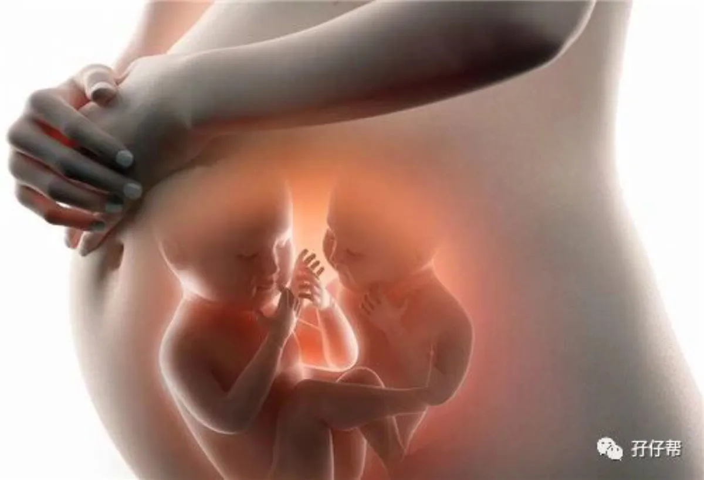
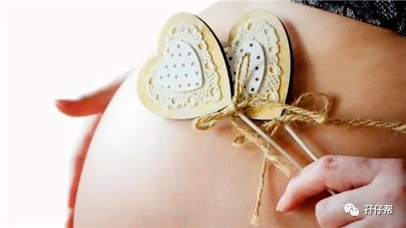
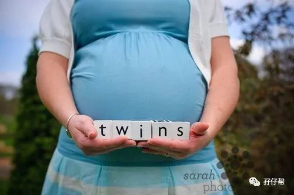
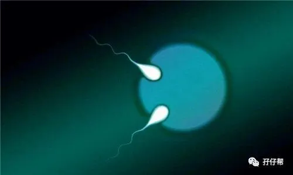

文|圆圈妈，一个文思如尿崩的双胎妈妈
图|来自网络，如有侵权，请联系删除
· 正 · 文 · 来 · 啦 ·
偶然看到一句话：“真正的出路，是走出自己内心的困境。”
我觉得特别适合拿来鼓励正在孕期中的双胞胎准妈妈！
“圆圈妈，我想咨询减胎！”
“已经20周了，还能减胎吗？”
“群里有姐妹减胎的吗？”
“...”
这是我做公众号以来经常遇到的问题，注意，我用了【经常】这个词，并不是偶尔。
几乎每一个双胎妈妈知道怀上双胎那一刻，先是一愣，接着一惊，最后才一喜，下一秒就去问百度...接着就会有一个邪恶的念头冒出来：减胎！
想要减胎的你也许有很多不得已的苦衷，比如经济压力，三胎四胎，身体原因…
若如此，请遵循自己内心的答案吧！
但如果是以下原因：
对怀上双胞胎容易导致的并发症过度害怕，
对自己和两个小生命没有信心，
没有勇气面对哪些不可预知的风险…
...
那你被两小天使同时砸中这个概率真的很“拉仇恨”！
也许，你觉得委屈，并拿出这些数据为自己辩解。
双胎输血症的概率发生率10%--·5%（仅仅出现在单绒毛膜囊双胎）
双胎生长不一致发生率10%--30%
双胎消失综合征（双胎妊娠最早期，双胎之一消失）的概率是20%
先兆子痫在双胎妊娠的发生率是15%--20%
（以上数据来源于美国生殖医学会 (ASRM)《多胎妊娠和分娩》）
是的，上述数据均真实存在！
但，请不要忘记，那只是数据，只是概率！
我觉得大多数双胎妈妈都有一个共同点，缺爱！缺理解！
我算是搞明白了，为何妈妈们入群后都会有找到组织的感觉，因为大家都同病相怜（理论上双胎妊娠是一种疾病），惺惺相惜！
一个符号，一个表情发到群里，马上有一大票姑娘心神领会，秒懂其中滋味。
隔着屏幕都能感受到，PC端or手机端那边的孕妈处于哪种状态，心情是好是坏…
你说双胞胎孕期群的姑娘们都很无知吗？
非也！
她们不会比莆田系的专家”差！
孕期什么食物不能吃，哪个事情不能做，哪些产检项目必须做，哪种保健品吃不得，知道得一清二楚，解释得头头是道！
可是每当夜深人静时，想起白天爬楼看到的信息：那个谁谁胎停了，确诊双输了，生产大出血了...
于是瓦解了，崩溃了，眼泪扑簌簌地流…
你也别因此而羞涩！
当年的我，跟你们一样，而且，有过之而无不及。
我经常看那些骇人听闻的双胎妊娠惨状， 而且专挑着看！
数不清的夜晚，抱着白花花的巨肚，站不住，坐不下，躺不了，睡不着…只好扎根在厕所里，掏出手机，满屏都是“高危”“并发症”的字眼…
内心的苦涩，化作一行清泪和一腔鼻涕虫，随着几泡尿一起冲到马桶里。
住院待产期间，总担心有命上手术台，没命出来见明天的太阳...
整个孕期，我都不敢认真笑一下，哪怕假笑一次都不行！
我总担心，我不小心笑了，我的孕期就会出故障，然后空欢喜一场。
其实，现在想想，很多时候是自己钻进了死胡同，把困难扩大化了。
经历养育双胞胎的苦才发现，孕期那些想睡就睡，想吃就吃，不受任何牵绊，随心所欲的日子，最幸福了！
任何人的心里都想寻找一个避风的温暖港湾,尤其是双胎孕妈。
荷尔蒙的起伏与生理的巨大转变很难不让孕妇变得超级敏感又爱胡思乱想，这种因孕激素导致的性情大变无可厚非，但不代表你不需要去改变它。
孕妇的情绪可作为思维信息直接传给胎儿，妈妈心情愉快或恐惧，直接影响胎儿的生长发育。
转变心态是对你和两个小生命最大的救赎！因此，你更加需要试着走出自己内心的困境。
别忘了，世界上最大的敌人正是自己。
孖仔帮双胞胎社群藏着很多医护人员，因工作性质使然，她们的言词通常很精辟！
“反正现在一切正常，没啥好担心的！”
“知道越多，担心越多！活好当下吧！”
“风险与幸运并存，人生一直都是这样！”
据我观察，这些医护人员兼双胎孕妈都有一个共同特性：产检一路绿灯，熬到36周以上，两宝体重均在5斤以上，产后开奶很顺利，几乎0障碍切换到辣妈行列！
而且据我分析，他们除了有医学背景，还有一个我们达不到的境界： 佛系！精神和肉体全方位佛系的那种。
孕期那些并发症和生产时的突发状况，他们不会比我们了解的少，但恰恰因为够清楚，知道无法改变，倒不如欣然接受。
也许正是这种“无心插柳柳成荫”的心态帮助她们突破了孕期各种关卡，成为我们一干人等舔屏的对象。
当然，我们不是医护人员，达不到那种“看破红尘”的境界，但我们也不赖！达不到上神级别，也可以荣登小仙的雅座。
大前提是，首先走出自己内心的困境。
换种心态，换种角度。
无论产检报告单那些上上下下的箭头给你带来多大困扰，网上那些关于双胎妊娠的言论多么耸人听闻，请姑娘们都要坦然处之，一笑而过。
唯有如此，你才能更加深刻地体会到，“1个人，3颗心跳”，那种无法言喻的美妙和浓浓的幸福感。
正如“富贵险中求，拍案定乾坤”那样，富贵不会来的容易，不冒险不会得来富贵。
你被两个幸运小天使砸中，并最终赢得两位小天使“左拥右抱”的殊荣，必定要经受住考验，方能抱得小天使，凯旋归来。
那些大考小考般的各种产检和医生的千叮万嘱就当做是为人父母，初级水平的上岗考试吧！
任何担心焦虑都不能改变双胎妊娠最后的结局！
唯独对两胎儿有帮助的是，孕妈咪保持乐观的心态和舒畅的心情。
假设…万一…我只是说万一！
那些并发症真的不小心盯上你了，那就坦然接受吧！
既然躲不掉那就勇敢面对！
你容许两个小天使砸中你，为何不能容许他们偶尔调皮捣蛋下呢？
办法总比困难多！
信念创造奇迹！
请相信现在的医学，同时也要对你和两个宝宝有信心。
再苦再难，也一定要让这两孩子平安地来到这个世界，这是一个母亲的责任和义务。
自然情况下，出现双胞胎妊娠的可能性约为二百五十分之一，三胞胎妊娠约为一万分之一，四胞胎妊娠约为七十万分之一。
（以上数据来源于美国生殖医学会 (ASRM)《多胎妊娠和分娩》）
而你正好怀上了一对双胞胎。
你不是一次得到上帝祝福，而是两次获得青睐。
你还有什么理由不开心！
写在最后的话：
文章是一个曾经魔怔般存在，如今在这里放“马后炮”的双胞胎妈妈写的！
的确有点“站着说话不腰疼”的赶脚！
我曾经也是这样对那些前来劝慰我孕期放宽心的前辈们，暗暗竖中指，翻白眼！
因为你没有处在对方那样的境遇里面，没有真实地去经历，就无法切身体会他人承受的压力和责任，也没法感受到他拥有的资源和内心的渴望。
这世界从来没有感同身受，只有冷暖自知。
针没刺到你身上，你根本不知道痛！
也许每个人都有自身的局限，内心的一道坎，难以迈出来….
但我仍然希望所有双胎妈妈孕期都能端正心态，自我调节好，走出自己内心的困境，以积极乐观的心态迎接两位小天使的到来！
我走出来了，你也可以的！
今日互动话题
#怀上双胞胎的你，魔怔了吗？#
欢迎留言区分享你的心情
-END-
重磅互动
#你希望写什么育儿经验干货？#
评论区聊一聊
随便提，万一下篇就写了呢？
关于这个号
谢谢关注！
我是圆圈妈
85后，全职妈妈
家有孖仔两枚，圆圈&圈圈
双胞胎育儿公众号：孖仔帮
ID:twinsbang
旨意分享双胞胎育儿经验帮助双胞胎家庭
有经验可循
有组织可靠
希望我的经验对您有所启发
期待与您一起共享双胞胎育儿经



